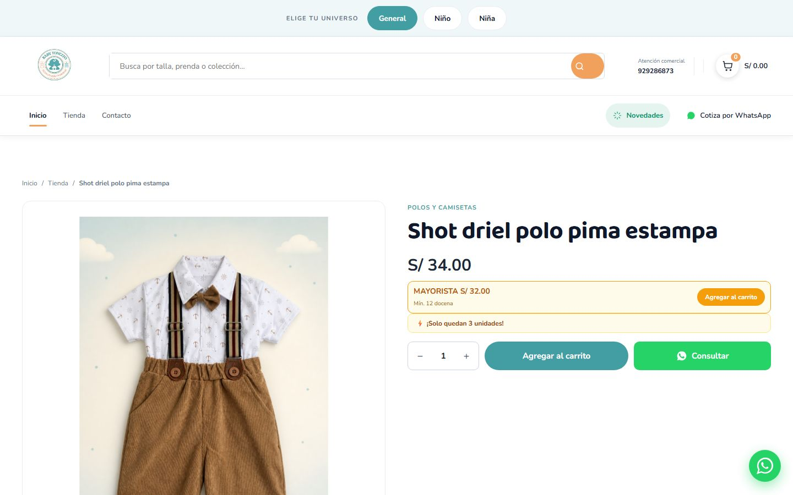
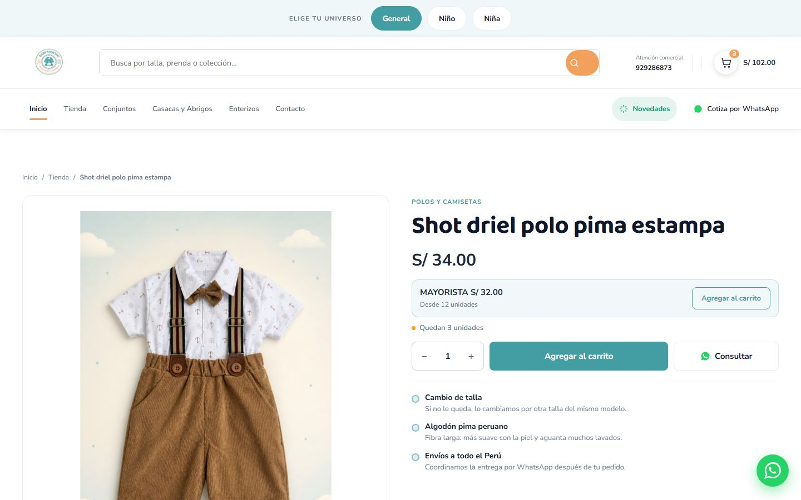
Tres botones del mismo tamaño compitiendo → un CTA que manda, mayorista secundario en color de marca y WhatsApp en contorno. Aviso de stock en caja amarilla con rayo → línea discreta. «Mín. 12 docena» → «Desde 12 unidades». Bloque nuevo de garantías bajo el botón.
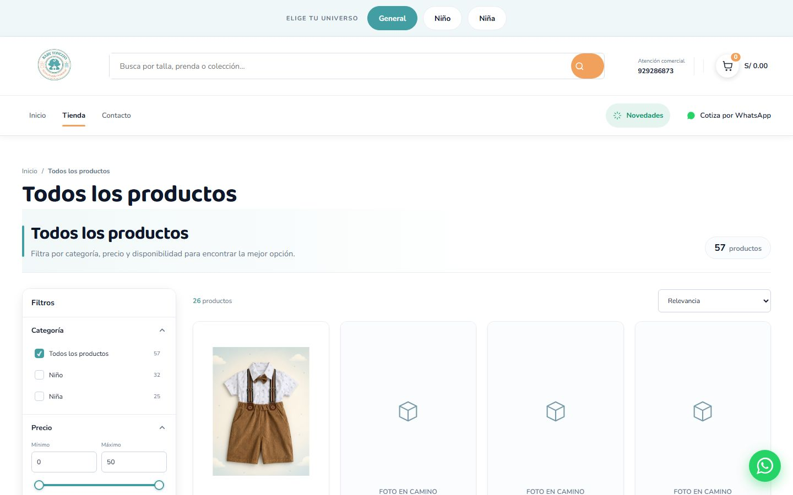
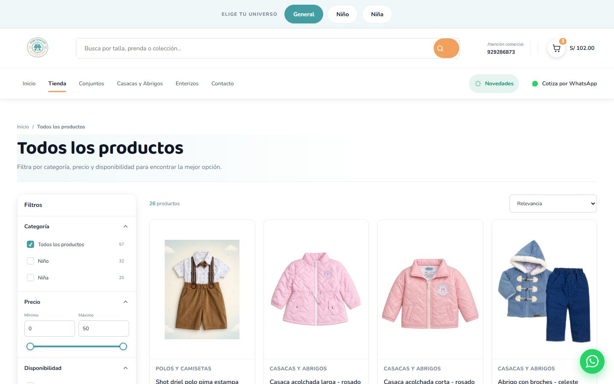
«Todos los productos» salía dos veces (h1 y h2). Dos contadores que se contradecían (57 y 26). Tres de las cuatro primeras tarjetas eran «FOTO EN CAMINO». Borde de color a la izquierda del banner.
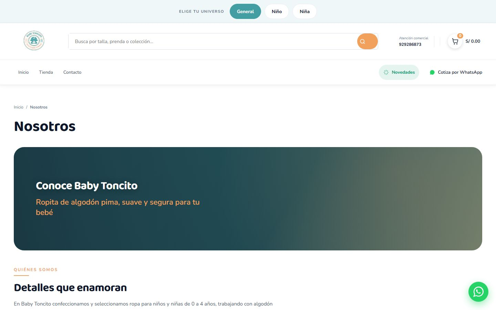
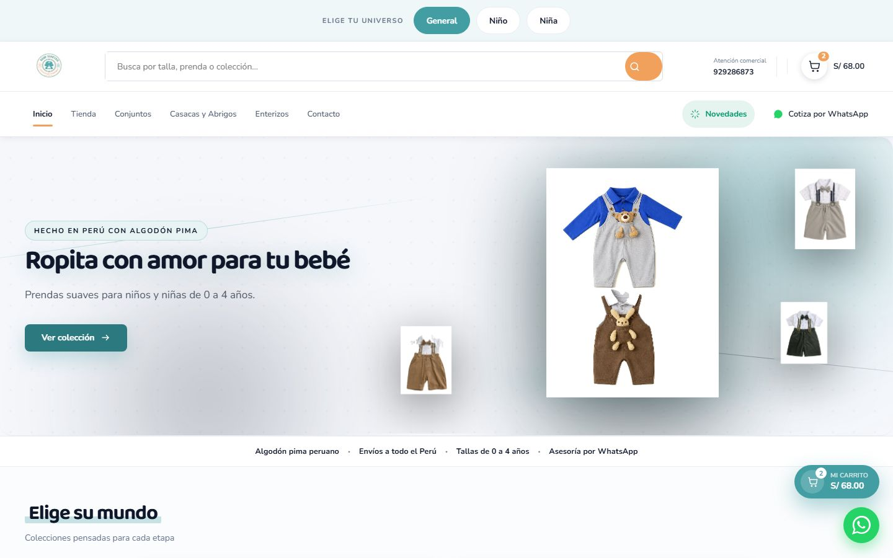
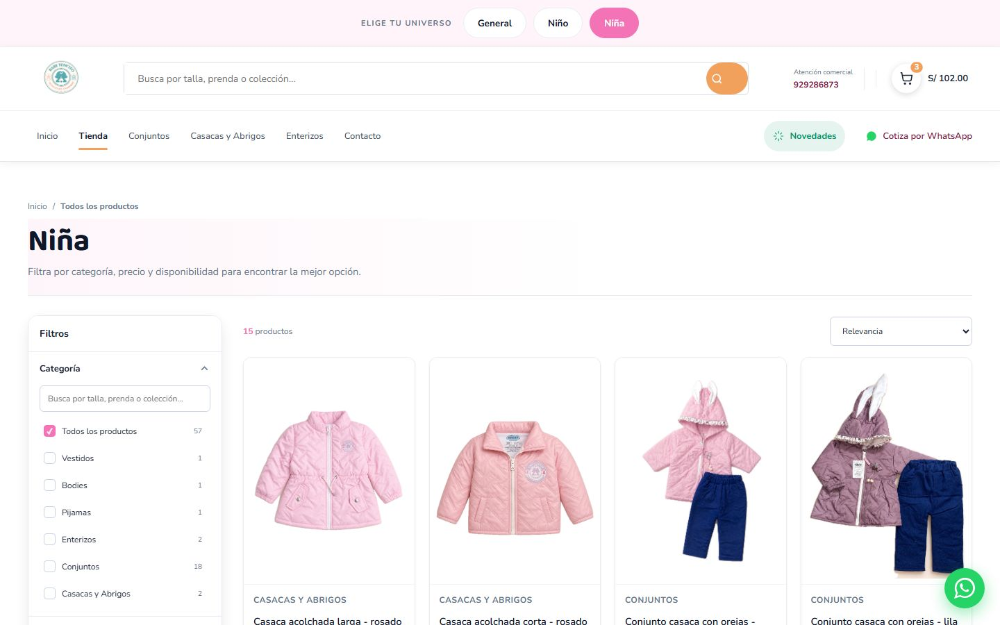
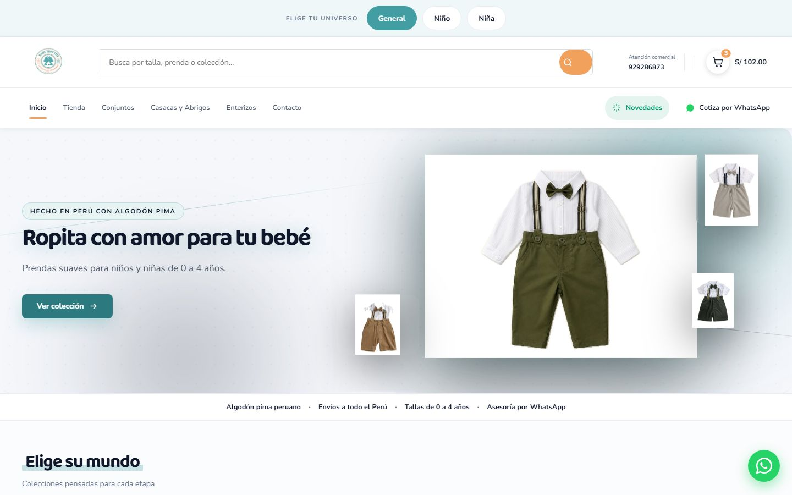
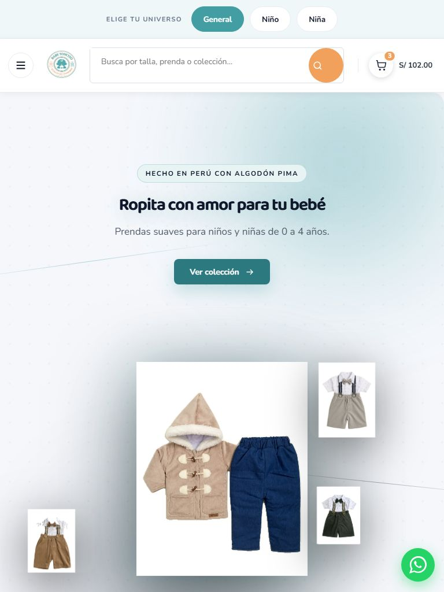
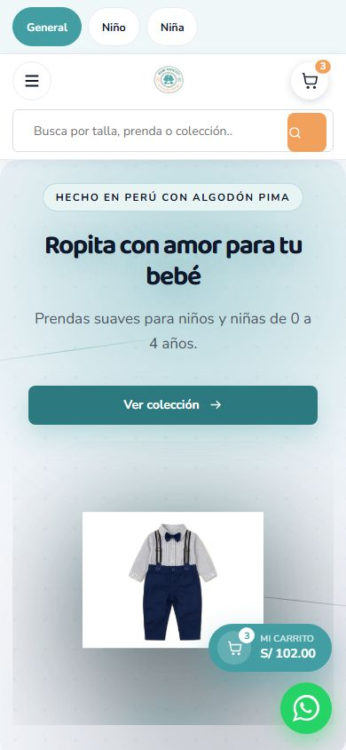
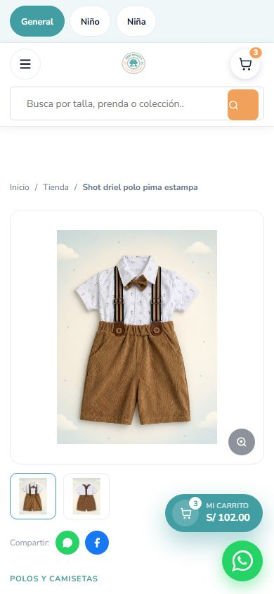
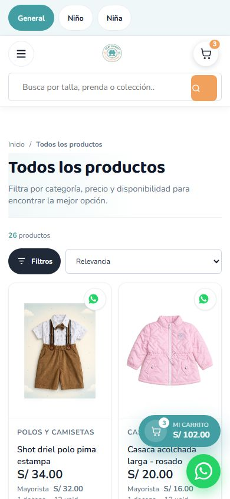